Configuration reference
2.0 configuration additions
These settings use the same directives and SET name value hints as older
configurations. The lines below are complete examples: choose the value you need, rather
than copying several alternatives into the same block. Follow each link for its syntax,
defaults and scope.
| Example configuration | Meaning |
|---|---|
COMMENTCURVE 1COMMENTCURVE 0 |
Follow the link curve (1, the default), or use straight comment text (0). Applies to a link or LINK DEFAULT. Requires a TrueType comment font. |
SET background_sizing imageSET background_sizing fitSET background_sizing stretch |
Use the background image's dimensions, fit it proportionally inside the canvas, or stretch it to fill the canvas. Place this setting in the global section. |
SET traffic_pulse 1SET traffic_pulse 0 |
Enable (1, the default) or disable (0) the viewer's high-load pulse. Each direction is checked separately at 80% utilisation or above. |
LABELOFFSET S60SET editor_label_position S60 |
The editor's bottom label preset. Use matching N60, C or S60 values for its top, middle or bottom presets. Raw LABELOFFSET remains available. |
Map note metadataSET editor_note 1 |
Identify a label-only node as an editable map note. The full entry describes the alignment and escaping hints; Add Note writes these for you. |
BANDWIDTH 1000M |
The inherited default capacity in both directions when no value is configured. BANDWIDTH itself is existing syntax; explicit map values and templates take precedence. |
Complete runnable example combining background sizing, curved comments, pulsing, a node label preset and an editable note.
Reading the syntax
In syntax forms, italic text is a value you supply, | separates
alternatives and square brackets mark optional arguments. Do not type these notation marks.
Keep modifiers attached to their target: for example, TARGET first.rrd -second.rrd
0.5*third.rrd.
This reference retains the core map syntax and adds the 2.0 controls above. The editor exposes common settings; raw configuration supports additional directives.
Directive index
Node-specific Configuration Directives
*COLOR ICON INFOURL LABEL LABELANGLE LABELFONT LABELOFFSET Editor label presets Map notes MAXVALUE NODE NOTES OVERLIBCAPTION OVERLIBGRAPH OVERLIBHEIGHT OVERLIBWIDTH POSITION SET TARGET TEMPLATE USEICONSCALE USESCALE ZORDER
Link-specific Configuration Directives
ARROWSTYLE BANDWIDTH BWFONT BWLABEL BWLABELPOS BWSTYLE *COLOR COMMENTFONT COMMENTPOS COMMENTSTYLE COMMENTCURVE DUPLEX INBWFORMAT INCOMMENT INFOURL ININFOURL INNOTES INOVERLIBCAPTION INOVERLIBGRAPH LINK LINKSTYLE NODES NOTES OUTBWFORMAT OUTCOMMENT OUTINFOURL OUTNOTES OUTOVERLIBCAPTION OUTOVERLIBGRAPH OVERLIBCAPTION OVERLIBGRAPH OVERLIBHEIGHT OVERLIBWIDTH SET SPLITPOS TARGET TEMPLATE USESCALE VIA VIASTYLE WIDTH ZORDER
Global Configuration Directives
BACKGROUND Background sizing Traffic pulse *COLOR DATAOUTPUTFILE *FONT FONTDEFINE HEIGHT HTMLOUTPUTFILE HTMLSTYLE HTMLSTYLESHEET IMAGEOUTPUTFILE IMAGEURI INCLUDE KEYPOS KEYSTYLE KILO MAXTIMEPOS MINTIMEPOS SCALE SET TIMEPOS TITLE TITLEPOS WIDTH
Node-specific Configuration Directives
NODE
The initial definition of a NODE. This must come before any other configuration related to this node.
The 'nodename' is used in link definitions to specify which nodes the link joins. The nodename is must be a single word, with no spaces.
There is one special node name, 'DEFAULT', which allows for the setting of defaults. All nodes that are defined after this one in the configuration file will use the parameters of this node as a starting point. For this reason, it is best to define the DEFAULT node at the top of the configuration file, if you intend to use it.
Change History
- 0.7
- Added DEFAULT node.
TEMPLATE
By default, each new node starts with the same set of properties. You can change the default properties by defining a node called DEFAULT.
You can also use the TEMPLATE keyword to make a node inherit its settings from any other node. The node you use must be defined earlier in the config file than where you use it.
You can make template-only nodes that are not visible in the map, by not including a POSITION line in the node. Template nodes can also use templates, to build up a hierarchy of 'types'.
NOTE: The TEMPLATE line should be the first line in the NODE definition, as it will copy the configuration over the top of anything else you have already defined for that NODE.
Examples
NODE Templates in use - with template-only nodes
NODE server
ICON 48 48 images/objects/Server.png
LABELFONT 3
NODE app_server
TEMPLATE server
LABEL Application server
POSITION 200 150
Change History
- 0.96
- Added template support
POSITION
Relative polar example: POSITION core 90r100 places the node 100 map units
from core at 90 degrees. The reference node must resolve to a real position.
Specifies where to place the node on the map. Coordinates are in pixel units, with the origin at the top-left of the map.
Optionally, you can also specify another node that the coordinates are relative to. This allows you to have 'sub-nodes' that follow a master node around as you alter the map. Relative nodes can be relative to other relative nodes, as long as the node at the end of the chain is not relatively positioned!
Examples
Example of a 'sub-node', that will be 20 pixels above the main node,
wherever that gets moved to. It is used to show additional information about the main
node.
NODE main_node
POSITION 200 320
LABEL MAIN
NODE sub_node
POSITION main_node 0 -20
LABEL {nodes:main_node:invalue}
Change History
- 0.9
- Add relative position from other nodes.
LABEL
Specifies a label for the node. Everything to the end of the line is used.
If the node has an ICON defined as well, then you can specify the position of the label relative to the node's centre-point by using LABELOFFSET.
The text for the label can contain special tokens to show map data.
This is drawn using the font specified by LABELFONT in the colours specified by LABELFONTCOLOR, LABELFONTSHADOWCOLOR, LABELBGCOLOR and LABELOUTLINECOLOR.
Change History
- 0.9
- Added 'special token' support.
TARGET
Specifies where to look for the current "throughput" information for this NODE. You can also specify multiple targets, which will then be added together to make the aggregate result which is then displayed. Specify the targets on one TARGET line, separated with a space. If a targetspec starts with a '-', then its value will be subtracted from the final result instead.
Also, if a targetspec starts with a number, then a *, then it's used a scaling factor on the result. You can do basic maths with this, especially if you remember that multiplying by a number below 1 is the same as dividing by 1 divided by that number (0.5* is the same as divide by 2).
For both the '-' and '*' options, there must be no spaces between any modifiers and the actual target string after it.
It's important to note, especially for NODEs, that the value that is used does not have to be bandwidth. You can use data for temperature, session-counts, CPU usage or anything else you can get data for.
The actual contents of the targetspec depend on the data source plugins that are available. The standard plugins are documented here.
To help with filenames that can contain spaces, or for the external script data source, you can enclose the entire targetspec in double-quotes (") to show that it is a single targetspec. The quotes must be around the whole targetspec, including any prefixes.
Examples
Using multiple data sources for one link
TARGET link1a.rrd link1b.rrd
Taking the input from one file, and output from another
TARGET poot.rrd:-:DS1 poot2.rrd:DS0:-
Change History
- 0.96
- Added quotes option for targets with spaces.
- 0.96
- Added scale factors for all datasources.
- 0.91
- Added 'negative' datasources.
- 0.9
- Added plugin data sources, node targets, and added new plugins.
- 0.8
- Added ability to specify multiple targets. Added tab-delimited data source. Added 'ignore' DS name.
- 0.5
- Added ability to specify DS names.
USESCALE
Square brackets mark optional arguments; do not type the brackets. For example,
USESCALE temperature in absolute selects the inbound raw value instead of a
percentage.
Specify which SCALE to use to decide the colour of this node.
After the percentage usage is calculated (using BANDWIDTH/MAXVALUE and data from the TARGET line), the colour is decided by looking up the percentage against this SCALE. If there is no USESCALE line, then the default scale is used.
If you also specify 'absolute', then no percentage calculation is performed. The raw values from the TARGET line are just looked up in the named SCALE.
For nodes, you can also specify a scalename of 'none'. This stops the node's colour from changing at all. This is useful if you want to use the TARGET line to fetch data that is used in the LABEL or ICON of the node, for example, without changing the colour of the node itself.
You can also change the colour of the ICON associated with a NODE according to a different SCALE, by using USEICONSCALE.
Change History
- 0.97
- Added absolute scale support.
- 0.95
- Added USEICONSCALE.
- 0.9
- Added named scales and USESCALE.
MAXVALUE
Specifies the maximum value(s) for the node, in the same way that BANDWIDTH does for a LINK. These are used to calculate the percentage usage value, which in turn is used to decide the NODE's colour, if it has a TARGET defined.
The default value is 100, which has the effect of not changing the input value ( (n/100)*100 = n ).
Change History
- 0.9
- Added TARGET and MAXVALUE for nodes.
ICON
Specifies an icon to use for the node.
The filename can either be a full path to the image, or a relative one.
The icon file must be in PNG, JPEG or GIF format. Alpha-transparency within the icon should be honoured by Weathermap for PNG icons, to create irregular shapes.
If you specify the word 'none' as the icon filename, then no icon is used. This is useful if you have specified an ICON in the DEFAULT NODE, and want to override that for a few special cases.
There are some special icon filenames that can be used to generate an icon image without using an external file. These all require you to specify a maxwidth and maxheight which are then used as the size of the icon. The 'magic filenames' are:
- 'box' - to produce a square cornered box.
- 'rbox' - to produce a round-cornered box
- 'round' - to produce a circle or ellipse.
- 'inpie' & 'outpie' - to produce a pie-chart of either the in or out value relative to it's maximum. Use the artificial-icon colour directives below.
- 'nink' - to produce a circular 'yin-yang'-style symbol, with each half showing the in and out values. Use the artificial-icon colour directives below.
The second form allows you to specify a maximum width and height for the icon. If the PNG file that you specify is bigger or smaller than this size, then it is automatically scaled up (or down) in proportion, so that it fits into a box of the size you specify.
The size of the icon image is used by LABELOFFSET to decided how far to move the label, if you use compass-point offsets.
The text for the filename can contain special tokens to select an icon based on map data.
You can adjust the colour of the icon according to a SCALE, by using USEICONSCALE, if you are using the PHP GD library (the function required is not present in the main GD library).
Change History
- 0.96
- Added inpie, outpie and nink.
- 0.95
- Added Artificial Icon support - round, rbox and box.
- 0.95
- Added Icon colourising support.
- 0.9
- Added 'special token' support.
- 0.9
- Added JPEG and GIF support.
- 0.9
- Added special icon 'none', and automatic scaling.
USEICONSCALE
Square brackets mark optional arguments; do not type the brackets. For example,
USEICONSCALE temperature in absolute selects the inbound raw value instead of
a percentage.
Specify which SCALE to use to decide the colour of the icon for this node.
After the percentage usage is calculated (using BANDWIDTH/MAXVALUE and data from the TARGET line), the colour is decided by looking up the percentage against this SCALE. If there is no USEICONSCALE line, then no scale is used, and the icon colour does not change.
Hint: This facility works best when you start with greyscale images.
NOTE: Prior to 0.97, Icon colourising used the PHP
imagefilter() function. This function is only available in the
version of GD that is bundled with PHP, and not with the official GD library. Several
popular operating systems (e.g. Debian/Ubuntu) use the official GD library rather than
the bundled PHP library. If you know that you do have the imagefilter function,
and you prefer the 'old-style' coloring, then you can add SET use_imagefilter 1 in the top section of your map config file,
to use imagefilter instead.
Change History
- 0.97
- Removed dependency on imagefilter
- 0.95
- Added USEICONSCALE.
LABELOFFSET
Examples: LABELOFFSET N20 adds distance to a compass offset;
LABELOFFSET 90r30 uses a polar offset. Do not insert a space inside either
combined value.
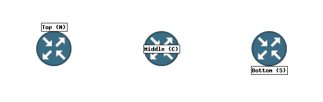
If you specify an ICON, and also a LABEL, then you will find that the label is often hard to read. LABELOFFSET allows you to move the position of the LABEL, so that it's not directly over the centre of the node anymore.
You can specify a compass-point (e.g. LABELOFFSET S). The compass-point method takes the size of the ICON, and uses that as the offset distance in the direction you specify. This way, you can change your icon for something of a different size, and not need to change all your offsets. You can use the main 8 points of the compass: N, E, S, W, NE, SE, NW, SW.
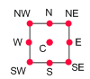
The compass points, relative to the node's bounding-box..
For more control, you can specify an integer offset for the x and y positions of the label (e.g. LABELOFFSET -10 -20) instead.
Change History
- 0.7
- Originally added LABELOFFSET
SET editor_label_position
Records the editor's Display name position preset for a node: N60 is
Top, C is Middle, and S60 is Bottom. Use it together with an
identical LABELOFFSET value.
Default: no preset hint. Existing raw LABELOFFSET behaviour is kept. When the two values match a supported preset, the label is positioned within the icon's available space. Without a matching hint, the offset uses the ordinary raw calculation.
The hint affects the label, not the node's POSITION. Prefer the node dialog's Display name position control; use raw LABELOFFSET for other offsets. The node properties guide shows the control.
Examples
NODE router
LABEL Core router
ICON 72 72 images/objects/cisco-router.png
POSITION 120 100
LABELOFFSET S60
SET editor_label_position S60Change History
- 2.0
- Added editor Top, Middle and Bottom presets with matching node hints. LABELOFFSET is older syntax.
Map notes: editor_note hints
A visible map note is a label-only NODE, identified by
SET editor_note 1. There is no new NOTE directive; the older
NOTES directive supplies popup text.
Defaults: a node is not a map note unless editor_note is set to 1;
note alignment is left when omitted. Use centre or
right to align shorter lines within a multiline note. Alignment does not
change its POSITION.
editor_note_escaped 1 tells the renderer to decode the editor's LABEL
escaping: \n starts a new line and \\ represents a literal
backslash. The editor writes it when saving a note. Without this hint, older label
handling is retained.
Use Add Note to create the complete node, including its font, text colour and transparent background. Use a readable TrueType font for sharp text. If NODE DEFAULT defines an icon or other custom styles, the note must override those inherited values; keep the complete block written by the editor. See map notes and the runnable example.
The raw alignment spelling is centre. This differs from the existing
COMMENTSTYLE center setting for link comments.
Examples
FONTDEFINE 100 docs/example/Vera.ttf 10
NODE site_note
LABEL Example site\nTraffic overview
LABELFONT 100
LABELBGCOLOR none
LABELOUTLINECOLOR none
LABELFONTSHADOWCOLOR none
POSITION 330 240
SET editor_note 1
SET editor_note_escaped 1
SET editor_note_align centreChange History
- 2.0
- Added editable map notes, alignment hints and escaped multiline text.
LABELANGLE
Specifies a rotation angle of the label for a node. Allowed angles are 0, 90, 180 and 270 degrees. The rotation is around the centre of the label, after any LABELOFFSET has been applied.
The LABELFONT must be a TrueType font for angles other than 0 (the default) as these are the only font type to support rotating text.
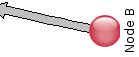
LABELANGLE 90 and
LABELOFFSET E
Change History
- 0.95
- Added LABELANGLE.
LABELFONT
Specify the font used for drawing the LABEL.
Fonts are specified by number. The GD library that Weathermap uses has 5 built-in fonts, 1-5. You can define new fonts based on TrueType or GD fonts by using the FONTDEFINE directive.
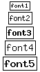
The built-in GD fonts.Change History
- 0.7
- Global NODEFONT became per-node LABELFONT.
- 0.6
- Originally added NODEFONT.
*COLOR
Specify the colours used for drawing the LABEL.
red, green and blue are numbers from 0 to 255.
LABELFONTSHADOWCOLOR, LABELBGCOLOR and LABELOUTLINECOLOR, AICONFILLCOLOR and AICONOUTLINECOLOR have an additional option - 'none' - which stops that element of the LABEL being drawn. LABELFONTSHADOWCOLOR defaults to 'none'.
LABELFONTCOLOR has an additional option 'contrast', which will select either black or white depending on the current LABELBGCOLOR. This is especially useful if you are using a SCALE to change the colour of your NODE LABELs.
AICONOUTLINECOLOR and AICONFILLCOLOR are used to colour an 'artificial ICON' if one is defined for this node. To allow the artifical icon to also follow the colour of the LABELBGCOLOR when you are using a SCALE, you can also specify 'copy' as the colour for AICONFILLCOLOR. See ICON for more about artificial icons.
Change History
- 0.98
- Added 'none' for AICONFILLCOLOR.
- 0.95
- Added 'contrast' and 'copy' options.
- 0.95
- Added AICONFILLCOLOR and AICONOUTLINECOLOR.
- 0.8
- Added LABELFONTCOLOR, LABELFONTSHADOWCOLOR, LABELBGCOLOR and LABELOUTLINECOLOR.
INFOURL
Creates a hyperlink in the HTML output.
If you are using the HTML output facility, then a link is added to the <map> section of the HTML so that when you click on the node, you are taken to the url specified here.
OVERLIBGRAPH
Creates a popup image in the HTML output.
If you are using the HTML output facility, and HTMLSTYLE is set to 'overlib', then a link is added to the <map> section of the HTML so that when you move the mouse pointer over the the node, a box will pop up containing the image that you specify. Typically used to link to historical data in your network monitoring system.
You can also specify more than one url, in which case the images are 'stacked' one after another in the popup box.
If a NOTES line is also specified for a node, then the image(s) specified here appears with the NOTES text underneath it.
You can influence how Weathermap positions the popup box, using the OVERLIBWIDTH and OVERLIBHEIGHT keywords.
Examples
Typical use of OVERLIBGRAPH
OVERLIBGRAPH http://www.yoursite.net/mrtg/router1-cpu-daily.png
Change History
- 0.95
- Added multiple URL support
OVERLIBWIDTH
Specify the width, in pixels of the graph image referred to by OVERLIBGRAPH line.
These legacy size hints affect popup placement. Current viewers also fit previews to the available viewport. To change the graph image itself, adjust its graph_image.php URL or hover defaults; these directives do not request a larger Cacti graph.
Change History
- 0.7
- Originally added OVERLIBWIDTH and OVERLIBHEIGHT based on code by Niels Baggesen.
OVERLIBHEIGHT
Specify the height, in pixels of the graph image referred to by OVERLIBGRAPH line.
These legacy size hints affect popup placement. Current viewers also fit previews to the available viewport. To change the graph image itself, adjust its graph_image.php URL or hover defaults; these directives do not request a larger Cacti graph.
Change History
- 0.7
- Originally added OVERLIBWIDTH and OVERLIBHEIGHT based on code by Niels Baggesen.
OVERLIBCAPTION
Specify the caption used for the popup HTML 'window' if you have also specified an OVERLIBGRAPH line. By default, this is the name of the NODE.
The text for the caption can contain special tokens to show map data.
Change History
- 0.9
- Originally added OVERLIBCAPTION.
NOTES
Specifies the text or HTML notes for a node.
The notes text appears in a popup box when the user hovers their mouse over the node. If an OVERLIBGRAPH is specified too, then the text appears below the graph.
The map HTMLSTYLE must be set to 'overlib' to enable any of the mouse-hover functionality.
Change History
- 0.9
- Originally added NOTES.
SET
Specifies a value for a hint variable.
Hint Variables allow the user to pass settings to the internals of Weathermap that wouldn't normally need to be changed, or that aren't part of the core Weathermap application. Examples are: small rendering changes, parameters for datasources plugins and similar.
Hint Variables are either Global for the map, or assigned to a specific link or node.
There is more about Hint Variables in the Advanced Topics section.
Change History
- 0.9
- Originally added SET.
ZORDER
Specifies the order in which to draw this item on the map.
By default, all nodes are drawn above all links. There are some situations where you might like to change this, for example if you use a NODE as a background image, and you want links to show in front of that image.
By default, all nodes have a Z coordinate of 600, and all links have 300. The map legend is at 1000, which cannot be changed (you can move everything else above it, if you like, of course). Items are drawn from lowest Z up to highest Z, so if you want a particular node to appear underneath the default links, you can use 'ZORDER 250' to do that.
Change History
- 0.96
- Added Z-ordering support.
Link-specific Configuration Directives
LINK
The first line of a LINK definition.
The linkname must be unique within the map, and must not contain spaces. The only place it currently appears is in the small title-bar of a popup graph if you specify an OVERLIBGRAPH without an OVERLIBCAPTION, however.
There is one special link name, 'DEFAULT', which allows for the setting of defaults. All links that are defined after this one in the configuration file will use the parameters of this link as a starting point. For this reason, it is best to define the DEFAULT link at the top of the configuration file, if you intend to use it.
TEMPLATE
By default, each new link starts with the same set of properties. You can change the default properties by defining a link called DEFAULT.
You can also use the TEMPLATE keyword to make a link inherit its settings from any other link. The link you use must be defined earlier in the config file than where you use it.
You can make template-only links that are not visible in the map, by not including a NODES line in the link. Template links can also use templates, to build up a hierarchy of 'types'.
NOTE: The TEMPLATE line should be the first line in the LINK definition, as it will copy the configuration over the top of anything else you have already defined for that LINK.
Examples
LINK Templates in use - with template-only links
LINK bigpipe
WIDTH 8
ARROWSTYLE classic
LINK smallpipe
WIDTH 3
ARROWSTYLE compact
# this link uses the bigpipe template, so it doesn't need any formatting/styling commands
LINK a_real_link
TEMPLATE bigpipe
NODES rtr1 rtr2
Change History
- 0.96
- Added template support
NODES
These are the NODEs that this link joins. There can be only two. They are the 'nodename's from the NODE line for each node.
Optionally, you can add an offset after a nodename, to move the location of that end of the link. This can help with crowded areas of the map, and also in making parallel links. Valid offsets can be numeric values, to indicate the relative position in pixels from the centre of the node, or are named after compass-points: N,S,E,W,NE,NE,SE,SW. The compass points describe locations around the edge of the box that contains the node. You can also specify a percentage after the compass point, to be a certain proportion of the way from the centre. The percentage must be two digits. Finally, you can also use polar coordinates to specify offsets, with an angle in degrees and a radius in pixels from the centre point. 0 degrees is straight up.
The order of the nodes is significant. When reading data sources, the flow from the first node to the second is considered 'out' and from second-to-first is 'in'.
The compass points, relative to the node's bounding-box..
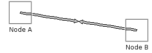
The default - node centre to node centre.
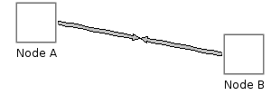
Using compass points -
NODES node1:E node2:W
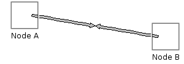
Using compass points with percentages -
NODES node1:E50
node2:W50
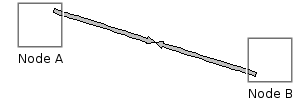
Using polar offsets -
NODES node1:45r20
node2:225r20
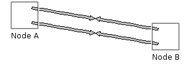
Using offsets to make parallel links-
NODES node1:NE50
node2:NW50 for one link and NODES node1:SE50
node2:SW50 for the other.
Examples
Defining a simple link
LINK mylink
NODES node1 node2
Two parallel links, using offsets
LINK firstlink
NODES node1:E node2:E
LINK secondlink
NODES node1:W node2:W
Two parallel links, using percentage compass offsets to bring the links
closer together
LINK firstlink
NODES node1:E50 node2:E50
LINK secondlink
NODES node1:W50 node2:W50
An offset link using pixel offsets
LINK firstlink
NODES node1:-10:10 node2:20:12
An offset link using polar coordinates
LINK firstlink
NODES node1:45r20 node2:225r20
Change History
- 0.96
- Added polar offsets.
- 0.96
- Added fractional compass offsets.
- 0.9
- Added numeric pixel offsets.
- 0.8
- Added ability to specify node offset.
TARGET
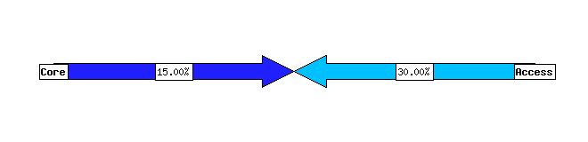
TARGET static:200M:100M static:100M:50M
BANDWIDTH 1GSpecifies where to look for the current throughput information for this LINK. You can also specify multiple targets, which will then be added together to make the aggregate bandwidth which is then displayed. Specify the targets on one TARGET line, separated with a space. If a targetspec starts with a '-', then its value will be subtracted from the final result instead.
Also, if a targetspec starts with a number, then a *, then it's used a scaling factor on the result. You can do basic maths with this, especially if you remember that multiplying by a number below 1 is the same as dividing by 1 divided by that number (0.5* is the same as divide by 2).
For both the '-' and '*' options, there must be no spaces between any modifiers and the actual target string after it.
The actual contents of the targetspec depend on the data source plugins that are available. The standard plugins are documented here.
To help with filenames that can contain spaces, or for the external script data source, you can enclose the entire targetspec in double-quotes (") to show that it is a single targetspec. The quotes must be around the whole targetspec, including any prefixes.
Examples
Using multiple data sources for one link
TARGET link1a.rrd link1b.rrd
Taking the input from one file, and output from another
TARGET poot.rrd:-:DS1 poot2.rrd:DS0:-
Change History
- 0.96
- Added quotes option for targets with spaces.
- 0.96
- Added scale factors for all datasources.
- 0.91
- Added 'negative' datasources.
- 0.9
- Added plugin data sources, node targets, and added new plugins.
- 0.8
- Added ability to specify multiple targets. Added tab-delimited data source. Added 'ignore' DS name.
- 0.5
- Added ability to specify DS names.
USESCALE
Specify which SCALE to use to decide the colour of this link.
After the percentage usage is calculated (using BANDWIDTH and data from the TARGET line), the colour is decided by looking up the percentage against this SCALE. If there is no USESCALE line, then the default scale is used.
If you also specify 'absolute', then no percentage calculation is performed. The raw values from the TARGET line are just looked up in the named SCALE.
Change History
- 0.97
- Added absolute scale support.
- 0.9
- Added named scales and USESCALE.
WIDTH
Specifies the width of this link when drawn. The width value can be any positive number (including non-integers).
The actual width of the final link arrow will be roughly 2*width+1 pixels, due to the way links are drawn, and rounding errors as the internal floating-point values are finally forced onto an integer pixel-grid.
What it actually does is calculate a centre-line (or spine), divide that up into so many segments, and then at each point along the spine, find the normal (90 degrees to the direction of the line). Then step WIDTH pixels along the normal in each direction to get a point to draw. This apparently-complex scheme is required to allow for VIAs - both angled and curved links have special handling, and regular straight links are treated as curved links with no VIA by default.
Change History
- 0.97a
- Added non-integer widths. Retconned explanation.
BANDWIDTH
MAXVALUE is also accepted as a link-capacity alias. Prefer BANDWIDTH for
traffic links to make the units clear.
Specifies the maximum throughput of this link, in bits per second.
Default: 1000M in each direction, unless a map default or template supplies a different capacity. With the default KILO 1000, 1G and 1000M are equivalent.
This is used to calculate the percentage utilisation, which in turn is used to make the colour for the link arrow, and optionally the label on the link.
The second form allows you to have 'asymmetric' links, like an ADSL, where the first number is the maximum bandwidth from node1 to node2 and the second is the maximum from node2 to node1, as they are given in the NODES line.
Bandwidths can also use K,M,G and T suffixes to specify large values. Also see the KILO global option though.
Examples
A typical ADSL line (as seen from the CPE)
BANDWIDTH 2M 256K
Change History
- 2.0
- Changed the inherited link-capacity default to 1000M in both directions; explicit capacities are preserved.
- 0.9
- Added MAXVALUE as a synonym to match NODE MAXVALUE. No change in functionality.
- 0.5
- Added support for decimals in BANDWIDTH specifications.
- 0.4
- Added support for K,M,G,T suffixes on bandwidth specs. Changed bandwidth from bytes to bits.
DUPLEX
'half' indicates that the bandwidth specified by the BANDWIDTH keyword is half-duplex rather than the default full.
This means that the percentages calculated are calculated as (in+out)/max instead of (in/max) and (out/max) separately.
Change History
- 0.95
- Added DUPLEX.
BWLABEL
Specifies the type of 'bandwidth' label shown on each link.
The default is 'percent', but you can also have 'none', 'unformatted' or 'bits'. 'bits' shows the actual bandwidth, formatted using K,M,T,G suffixes where appropriate. 'unformatted' takes the value from the TARGET and displays it without any formatting - this can be useful for mapping things other than bandwidth. 'none' hides the bandwidth label altogether.
Change History
- 0.8
- Added unformatted format.
- 0.7
- Changed from global BWLABELS to per-link BWLABEL.
INBWFORMAT
Specifies a custom string to use for the inbound data BWLABEL bandwidth labels.
This command is intended as an advanced alternative to the BWLABEL command, for situations where you want more control over the content of the labels.
Instead of using bits, percent, etc, you can use any string in the label. Most importantly, the text for the label can contain special tokens to show map data. In most normal situations you need to use the tokens, or the label won't do much useful
There is also a matching OUTBWFORMAT command to do the ame job for the outbound bandwidth label.
Examples
Providing more information in the bwlabel
INBWFORMAT {link:this:inpercent}% of {link:this:max_bandwidth_in:%k}b/sec
Change History
- 0.94
- Added INBWFORMAT.
OUTBWFORMAT
Specifies a custom string to use for the outbound data BWLABEL bandwidth labels.
See the INBWFORMAT entry for more information.
Change History
- 0.94
- Added OUTBWFORMAT.
BWSTYLE
Specifies the style used to draw the box around the 'bandwidth' label shown on each link.
Two styles are currently available: 'classic' leaves the box horizontal, regardless of the direction of the link. 'angled' rotates the box to follow the direction of the link arrow.
The BWFONT must be a TrueType font as these are the only font type to support rotating text.
To change the contents of the label, use BWLABEL or INBWFORMAT/OUTBWFORMAT.
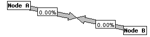
Classic label style
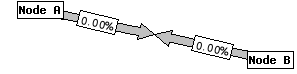
Angled label styleChange History
- 0.92
- Added BWSTYLE.
BWLABELPOS
Specifies the position of the 'bandwidth' labels shown on each link.
In the editor, set Traffic Label Positions under Map Style for map defaults, or under Link Properties → Advanced settings for one link. Use map default restores inheritance.
The
two position values are percentages along the link arrow, from the first to the second
node. Therefore BWLABELPOS 75 25 is the
default.
Weathermap will produce a warning if the outposition is greater than the inposition. In most cases, you have probably made a mistake, but if you have a good reason to do this, then you can disable that warning using 'SET nowarn_bwlabelpos 1' in the top section of you map config file.
Change History
- 2.0.1
- Added Map Style defaults and per-link Advanced controls for traffic-label positions; BWLABELPOS syntax is unchanged.
- 0.96
- Added warning for probably-wrong positions
- 0.9
- Added BWLABELPOS
BWFONT
Specify the font used for drawing the BWLABEL boxes.
Fonts are specified by number. The GD library that Weathermap uses has 5 built-in fonts, 1-5. You can define new fonts based on TrueType or GD fonts by using the FONTDEFINE directive.
The built-in GD fonts.
INCOMMENT
Specifies a comment for the input side of a LINK.
The link comment appears as text running alongside the link arrow. The font used is governed by COMMENTFONT and the colour by COMMENTFONTCOLOR.
The text for the comment can contain special tokens to show map data.
The COMMENTFONT must be a TrueType font as these are the only font type to support rotating text.
Change History
- 0.9
- Added link comments
OUTCOMMENT
Specifies a comment for the output side of a LINK.
The link comment appears as text running alongside the link arrow. The font used is governed by COMMENTFONT and the colour by COMMENTFONTCOLOR.
The text for the comment can contain special tokens to show map data.
The COMMENTFONT must be a TrueType font as these are the only font type to support rotating text.
Change History
- 0.9
- Added link comments
COMMENTFONT
Specify the font used for drawing the INCOMMENT and OUTCOMMENT text.
Fonts are specified by number. The GD library that Weathermap uses has 5 built-in fonts, 1-5. You can define new fonts based on TrueType or GD fonts by using the FONTDEFINE directive.
For Link Comments, you must define a TrueType font. These are the only font that can rotate text through any angle, as required by comments. You can change the colour used to render the font with COMMENTFONTCOLOR
Change History
- 0.9
- Added link comments
COMMENTPOS
Specify the position along the link used for drawing the INCOMMENT and OUTCOMMENT text.
The positions are specified as a percentage position along the link, like BWLABELPOS. The default positions are equivalent to COMMENTPOS 95 5.
Change History
- 0.92
- Added COMMENTPOS
COMMENTCURVE
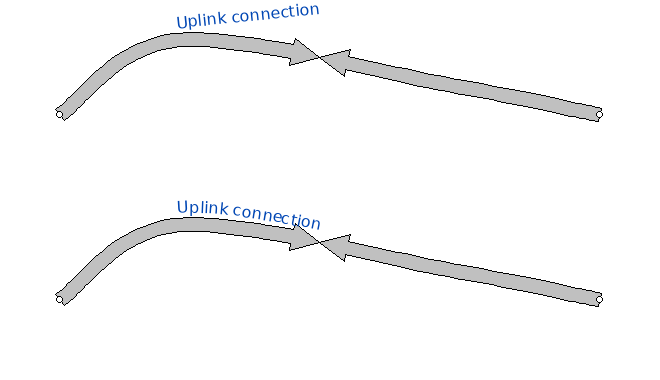
Use 1 to draw link comments along the link's curve, including curved VIA points. The default is 1 (follow link curve); use 0 for straight comments. This requires a TrueType COMMENTFONT. Text stays upright and uses COMMENTPOS and COMMENTSTYLE; tight bends, multiline comments, unsupported fonts and text longer than the link fall back to straight comments. In the editor, use Map Style > Link Appearance Defaults > Follow link curve.
Examples
FONTDEFINE 100 docs/example/Vera.ttf 9
LINK DEFAULT
COMMENTFONT 100
COMMENTCURVE 1
LINK straight_comments
NODES core access
COMMENTCURVE 0Define core and access as nodes in the map. The default follows curves; this link overrides it with straight comments. See the illustrated configuration above for a complete map.
Change History
- 2.0
- Added COMMENTCURVE and the Follow link curve editor control.
COMMENTSTYLE
Specify whether link comments run along the outside edge of the link, or down the centre of the link arrow.
In the editor, Link Comment Style in Map Style sets the map default. Comment Style in Link Properties overrides it for that link; Use map default restores inheritance.
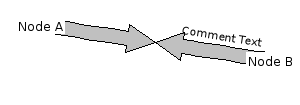
'edge' comment style
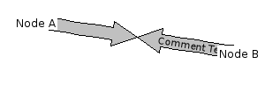
'center' comment styleChange History
- 2.0.1
- Added Map Style defaults and per-link Comment Style controls; COMMENTSTYLE syntax is unchanged.
- 0.96
- Added COMMENTSTYLE
SPLITPOS
Specify the position of the 'split' between the in and out arrows in a link. position is a percentage, and defaults to 50.
Change History
- 0.95
- Added SPLITPOS
*COLOR
Specify the colours used for drawing the link.
red, green and blue are numbers from 0 to 255.
OUTLINECOLOR, BWOUTLINECOLOR and BWBOXCOLOR have an additional option - 'none' - which stops that element of the link being drawn.
COMMENTFONTCOLOR also has an extra option - 'contrast' - which will choose black or white, depending on the colour of the link. This is most useful with COMMENTSTYLE center.
The colours are used as follows:
- OUTLINECOLOR is the colour of the line around the edge of the arrow.
- BWOUTLINECOLOR is the colour of the line surrounding the 'bandwidth label' box
- BWBOXCOLOR is the background colour for the same box
- BWFONTCOLOR is the colour used for text within that box
- COMMENTFONTCOLOR is the colour used for the text produced by INCOMMENT and OUTCOMMENT, along the side of a link arrow
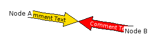
COMMENTFONTCOLOR contrast with COMMENTSTYLE center
Change History
- 0.96
- Added COMMENTFONTCOLOR contrast.
- 0.93
- Added correction - COMMENTCOLOR was shown instead of COMMENTFONTCOLOR.
- 0.9
- Added COMMENTCOLOR.
- 0.8
- Added OUTLINECOLOR, BWOUTLINECOLOR, BWFONTCOLOR and BWBOXCOLOR.
INFOURL
Creates a hyperlink in the HTML output.
If you are using the HTML output facility, then a link is added to the <map> section of the HTML so that when you click on the (weathermap) link, you are taken to the url specified here.
It is also possible to specify the INFOURL for the 'in' and 'out' halves of a link individually, using ININFOURL and OUTINFOURL.
Change History
- 0.95
- Added IN/OUT support
ININFOURL
Same as INFOURL, but specifies a hyperlink for only the 'in' side of a link.
Change History
- 0.95
- Added IN/OUT support
OUTINFOURL
Same as INFOURL, but specifies a hyperlink for only the 'out' side of a link.
Change History
- 0.95
- Added IN/OUT support
OVERLIBGRAPH
Creates a popup image in the HTML output.
If you are using the HTML output facility, and HTMLSTYLE is set to 'overlib', then a link is added to the <map> section of the HTML so that when you move the mouse pointer over the the (weathermap) link, a box will pop up containing the image that you specify. Typically used to link to historical data in your network monitoring system.
You can also specify more than one url, in which case the images are 'stacked' one after another in the popup box.
If a NOTES line is also specified for a link, then the image specified here appears with the NOTES text underneath it.
It is also possible to specify the OVERLIBGRAPH for the 'in' and 'out' halves of a link individually, using INOVERLIBGRAPH and OUTOVERLIBGRAPH.
You can influence how Weathermap positions the popup box, using the OVERLIBWIDTH and OVERLIBHEIGHT keywords.
Examples
Typical use of OVERLIBGRAPH
OVERLIBGRAPH http://www.yoursite.net/mrtg/router1-link2-daily.png
Change History
- 0.95
- Added multiple URL support
- 0.95
- Added IN/OUT support
- 0.0pre
- Odd fact: This command, and the accompanying code to generate overlib imagemaps, were the first modification I ever made to the GRNET perl weathermap, and was what got me interested in writing my own version.
INOVERLIBGRAPH
Same as OVERLIBGRAPH, but specifies a pop-up graph for only the 'in' side of a link.
Change History
- 0.95
- Added multiple URL support
- 0.95
- Added IN/OUT support
OUTOVERLIBGRAPH
Same as OVERLIBGRAPH, but specifies a pop-up graph for only the 'out' side of a link.
Change History
- 0.95
- Added multiple URL support
- 0.95
- Added IN/OUT support
OVERLIBWIDTH
Specify the width, in pixels of the graph image referred to by OVERLIBGRAPH line.
These legacy size hints affect popup placement. Current viewers also fit previews to the available viewport. To change the graph image itself, adjust its graph_image.php URL or hover defaults; these directives do not request a larger Cacti graph.
Change History
- 0.7
- Originally added OVERLIBWIDTH and OVERLIBHEIGHT based on code by Niels Baggesen.
OVERLIBHEIGHT
Specify the height, in pixels of the graph image referred to by OVERLIBGRAPH line.
These legacy size hints affect popup placement. Current viewers also fit previews to the available viewport. To change the graph image itself, adjust its graph_image.php URL or hover defaults; these directives do not request a larger Cacti graph.
Change History
- 0.7
- Originally added OVERLIBWIDTH and OVERLIBHEIGHT based on code by Niels Baggesen.
OVERLIBCAPTION
Specify the caption used for the popup HTML 'window' if you have also specified an OVERLIBGRAPH line. By default, this is the name of the LINK.
The text for the caption can contain special tokens to show map data.
Change History
- 0.9
- Originally added OVERLIBCAPTION.
INOVERLIBCAPTION
Same as OVERLIBCAPTION, but specifies a pop-up graph caption for only the 'in' side of a link.
Change History
- 0.95
- Added multiple URL support
- 0.9
- Originally added OVERLIBCAPTION.
OUTOVERLIBCAPTION
Same as OVERLIBCAPTION, but specifies a pop-up graph caption for only the 'out' side of a link.
Change History
- 0.95
- Added multiple URL support
- 0.9
- Originally added OVERLIBCAPTION.
NOTES
Specifies the text or HTML notes for a link.
The notes text appears in a popup box when the user hovers their mouse over the link. If an OVERLIBGRAPH is specified too, then the text appears below the graph.
The map HTMLSTYLE must be set to 'overlib' to enable any of the mouse-hover functionality.
It is also possible to specify the NOTES for the 'in' and 'out' halves of a link individually, using INNOTES and OUTNOTES.
Change History
- 0.95
- Added IN/OUT support
- 0.9
- Originally added NOTES.
INNOTES
Same as NOTES, but specifies a text box for only the 'in' side of a link.
Change History
- 0.95
- Added IN/OUT support
OUTNOTES
Same as NOTES, but specifies a pop-up text box for only the 'out' side of a link.
Change History
- 0.95
- Added IN/OUT support
VIA
Specify an additional point that a link must pass through.
A link normally goes in a straight line between the two nodes listed in the NODES configuration line. If you need it to go around something else, or to separate two parallel links so that the bandwidth labels are all visible, you can make the link curve.
If you specify multiple VIA lines, then the link will pass through each in turn, in the order they are specified.
You can choose between curved or angled links with VIASTYLE.
Any VIA can also be specified relative to a NODE on the map. This makes it easier to have curves keep the intended shape as you re-organise a map.
Change History
- 0.96
- Added angled VIAs.
- 0.95
- Added relative-positioned VIA.
- 0.8
- Originally added VIA.
VIASTYLE
When using VIA to define a non-straight LINK, you can choose to have a curved link, where the curve passes through each VIA point, or an angled link where each VIA point is a 'corner'. The default is for a curved link.
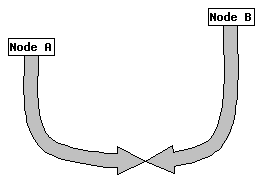
Curved VIA
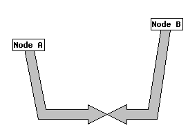
Angled VIAChange History
- 0.96
- Added 'angled' style, and VIASTYLE.
LINKSTYLE
Specifies the whether the link should be drawn with one or two arrows.
A 'standard' (twoway) link has two arrows - one for inbound data and one for outbound data. In some situations (e.g. round-trip latency), you might only want an arrow in one direction.
One-way arrows only show the outbound BWLABEL, but they show it in the standard position - 25% of the way along. Change the position of the label with BWLABELPOS as usual (you still need to specify two positions in the BWLABELPOS line, however).
Change History
- 0.94
- Added LINKSTYLE.
ARROWSTYLE
Specifies the style of arrowhead used for drawing links.
The default is 'classic' which has a wide arrowhead. You can also choose 'compact' which gives narrower heads.
Finally, you can get finer control by adjusting the size yourself. The width and length of the head are in units of link-width.
Classic is equivalent to '4 2' and Compact is equivalent to '1 1'.
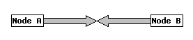
Classic arrow style
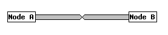
Compact arrow styleChange History
- 0.8
- Added custom numeric form.
- 0.7
- First added.
SET
Specifies a value for a hint variable.
Hint Variables allow the user to pass settings to the internals of Weathermap that wouldn't normally need to be changed, or that aren't part of the core Weathermap application. Examples are: small rendering changes, parameters for datasources plugins and similar.
Hint Variables are either Global for the map, or assigned to a specific link or node.
There is more about Hint Variables in the Advanced Topics section.
Change History
- 0.9
- Originally added SET.
ZORDER
Specifies the order in which to draw this item on the map.
By default, all nodes are drawn above all links. There are some situations where you might like to change this, for example if you use a NODE as a background image, and you want links to show in front of that image.
By default, all nodes have a Z coordinate of 600, and all links have 300. The map legend is at 1000, which cannot be changed (you can move everything else above it, if you like, of course). Items are drawn from lowest Z up to highest Z, so if you want a particular node to appear underneath the default links, you can use 'ZORDER 250' to do that.
Change History
- 0.96
- Added Z-ordering support.
Global Configuration Directives
BACKGROUND
Use a PNG, JPEG or GIF background. With SET background_sizing image (the
legacy default), a successfully loaded image sets the map dimensions. With
fit or stretch, WIDTH and HEIGHT define the canvas: fit
preserves the image aspect ratio; stretch fills both dimensions. See background sizing.
Change History
- 0.9
- Added JPEG and GIF support for backgrounds.
SET background_sizing
Controls how a BACKGROUND image is drawn. This is a map-global SET hint: put it before the first NODE or LINK.
Default: image in the renderer, preserving the older
image-sized canvas. New blank maps created by the editor explicitly select
fit.
imageuses the loaded image's dimensions as the map size.fitkeeps the configured WIDTH and HEIGHT, scaling the image proportionally to fit inside. Unused space shows the map background colour.stretchkeeps WIDTH and HEIGHT and scales the image in both directions to fill them. This can distort the image.
Without a background image, the setting has no image to scale. It does not move node coordinates. In the editor, use Map Properties → Background sizing. See background and canvas controls.
Examples
WIDTH 660
HEIGHT 300
BACKGROUND docs/example/background.png
SET background_sizing fitChange History
- 2.0
- Added fit and stretch modes; image mode keeps the previous behaviour.
SET traffic_pulse
Enables or disables the high-load link pulse in the normal browser viewer.
Default: 1 (enabled). Use 0 to disable it.
This is a map-global SET hint: place it before the first NODE or LINK. The threshold is 80% utilisation or above, calculated separately for each direction from its BANDWIDTH. Management hint overrides can take precedence over the file setting.
The effect does not change measured traffic, scale colours or polling frequency. The editor design preview and static image exports do not animate. In the editor, use Manage Colors → Pulse links at 80%+. See the animated illustration and troubleshooting.
Examples
SET traffic_pulse 1
LINK DEFAULT
BANDWIDTH 1GChange History
- 2.0
- Added optional high-load pulsing to the integrated viewer.
WIDTH
Sets the logical map width in pixels; the engine default is 800. A loaded background overrides this only in image sizing mode. In fit or stretch mode the configured width remains the canvas width. The editor may explicitly choose a larger preset for new maps.
HEIGHT
Sets the logical map height in pixels; the engine default is 600. A loaded background overrides this only in image sizing mode. In fit or stretch mode the configured height remains the canvas height. The editor may explicitly choose a different preset for new maps.
HTMLOUTPUTFILE
This specifies the name of the HTML file that will be generated.
The equivalent command-line option takes precedence over this configuration line, if both are used.
Change History
- 0.98
- This now creates a second copy of the file in the location specified, when using the Cacti plugin.
- 0.7
- Added HTMLOUTPUTFILE.
DATAOUTPUTFILE
Specifies a file to write a dump of all the data collected during the rendering of the map.
The file is in a tab-separated file format suitable for reading using the wmdata datasource plugin, which allows one map to refer to data in another map.
If you are using the Cacti plugin, this data is always saved in the output/ directory, in addition to anywhere you specify with this command.
Change History
- 0.98
- Added DATAOUTPUTFILE
HTMLSTYLESHEET
Specifies a CSS stylesheet to reference, when generating HTML.
When HTML output is enabled, this allows you to include your own CSS stylesheet in the result, allowing for customisation of the output without needing to use awk/perl/etc to modify the HTML.
If you are generating maps using the Cacti plugin, then this directive is ignored.
Added HTMLSTYLESHEET.
IMAGEOUTPUTFILE
This specifies the name of the PNG, JPEG or GIF file that will be generated. The format chosen is based on the file-extension.
The equivalent command-line option takes precedence over this configuration line, if both are used.
Change History
- 0.98
- This now creates a second copy of the file in the location specified, when using the Cacti plugin.
- 0.9
- Added JPEG and GIF support.
- 0.7
- Added IMAGEOUTPUTFILE.
IMAGEURI
If you are generating output files using HTMLOUTPUTFILE and IMAGEOUTPUTFILE that are in a different directory to the weathermap installation, then the HTML will probably contain an incorrect IMG tag. This keyword allows you to replace the IMG SRC attribute in the HTML output with a corrected one.
The equivalent command-line option (--image-uri) takes precedence over this configuration line, if both are used.
If you are generating maps using the Cacti plugin, then this directive is ignored, as the filename and uri are calculated instead.
Change History
- 0.96
- Added IMAGEURI.
FONTDEFINE
Defines a custom font to be used for text within the map.
By default, the GD library used by Weathermap has 5 fonts, numbered 1-5. FONTDEFINE allows you to define new font numbers, and link them to fonts in two other formats.
The first format is 'GD fonts', which are a bitmapped format used by GD alone. They are not scalable, and are also platform-specific (they use a different byte-order depending on the host). You should specify the full filename including any extensions.
The second format is TrueType fonts, which are scalable, standard and generally a lot nicer! This time, you need to specify the size that the font should be rendered at. The size is in pixels. You can load the same font into multiple fontnumbers with different sizes to use in different parts of a map.
The freetype library used in PHP makes a somewhat complex set of rules for where it will search for truetype fonts. The two easiest options are:
- Use the full absolute path to your .ttf file
- Keep your .ttf files in the Weathermap directory, and use the first part of the filename only, with no '.ttf' on the end.
If you have a font in the Weathermap directory as above and it's not loading, also try: ./FontName.ttf
The full set of rules is available hereRegardless of the format, the newly defined font can be used anywhere that you'd normally use a font number (for example, BWFONT or KEYFONT).
Examples
Defining a new Truetype font, with the font file in the weathermap
directory
FONTDEFINE 10 VeraBd 16
Change History
- 0.8
- First added FONTDEFINE
*FONT
Specify the fonts used for various text.
Fonts are specified by number. The GD library that Weathermap uses has 5 built-in fonts, 1-5. You can define new fonts based on TrueType or GD fonts by using the FONTDEFINE directive.
The built-in GD fonts.
Change History
- 0.8
- Originally added TITLEFONT.
- 0.7
- Originally added TIMEFONT.
- 0.6
- Originally added KEYFONT.
*COLOR
Specify the colours used for drawing the global elements of the map.
red, green and blue are numbers from 0 to 255.
You can also choose not to draw either the outline or background rectangle for keys by specifying 'none' for those.
Change History
- 0.98
- Added 'none' option for KEYBGCOLOR and KEYOUTLINECOLOR
- 0.8
- Added TIMECOLOR, TITLECOLOR, KEYTEXTCOLOR, KEYOUTLINECOLOR and KEYBGCOLOR.
- 0.7
- Added BGCOLOR.
TIMEPOS
Specifies where to draw the timestamp on the map.
If no
TIMEPOS line is given, then the timestamp is drawn in the
top-right corner. To hide it completely, set y to be
You
can optionally specify an additional parameter to change the text of the timestamp. This
text can contain special tokens which are substituted with parts of the current time. The
default timestamp text is Created: %b %d %Y %H:%M:%S
You can control the font used to draw the timestamp with TIMEFONT, and the colour that it is drawn in, using TIMECOLOR.
Change History
- 0.6
- Added ability to change text.
- 0.5
- Originally added TIMEPOS
MINTIMEPOS
Specifies where to draw the 'oldest data' timestamp on the map.
The data collection part of weathermap collects a timestamp for each piece of data, alongside the actual data. This is intended to signify the time that the data was actually valid - it would be the file modification date if it was a text file, or the current time if it was a live SNMP query. The minimum and maximum of these times are collated, and can be shown on the map with MINTIMEPOS and MAXTIMEPOS.
If no MINTIMEPOS line is given, then the timestamp is not drawn.
You
can optionally specify an additional parameter to change the text of the timestamp. This
text can contain special tokens which are substituted with parts of the current time. The
default timestamp text is Oldest Data: %b %d %Y %H:%M:%S
You can control the font used to draw the timestamp with TIMEFONT, and the colour that it is drawn in, using TIMECOLOR.
Change History
- 0.96
- Originally added MINTIMEPOS
MAXTIMEPOS
Specifies where to draw the 'newest data' timestamp on the map.
The data collection part of weathermap collects a timestamp for each piece of data, alongside the actual data. This is intended to signify the time that the data was actually valid - it would be the file modification date if it was a text file, or the current time if it was a live SNMP query. The minimum and maximum of these times are collated, and can be shown on the map with MINTIMEPOS and MAXTIMEPOS.
If no MAXTIMEPOS line is given, then the timestamp is not drawn.
You
can optionally specify an additional parameter to change the text of the timestamp. This
text can contain special tokens which are substituted with parts of the current time. The
default timestamp text is Newest Data: %b %d %Y %H:%M:%S
You can control the font used to draw the timestamp with TIMEFONT, and the colour that it is drawn in, using TIMECOLOR.
Change History
- 0.96
- Originally added MAXTIMEPOS
TITLE
TITLEPOS
Specifies the position of the title text.
If no TITLEPOS line is given, then no title is drawn. You can optionally specify an additional parameter, to change the title. Any text after the second coordinate is taken as a new TITLE.
You can control the font used to draw the title with TITLEFONT, and the colour that it is drawn in, using TITLECOLOR.
Change History
- 0.8
- Originally added TITLEPOS.
KILO
Specifies base value for kilo, mega and giga abbreviations.
Both BANDWIDTH and BWLABEL can use K,M,G,T as abbreviations for thousands, millions and so on. You can define what the multiple used is. The default is 1000.
Change History
- 0.4
- Originally added KILO.
HTMLSTYLE
Specifies the HTML output style.
When HTML output is enabled, there are two variations, which you can choose between. 'static' is a basic HTML page with client-side imagemap, but no 'pop up' graphs. 'overlib' enables popup-compatible HTML output so that pop up graphs can work, too. This requires Javascript, which is why 'static' is the default.
The Cacti viewer provides the current popup behaviour. A command-line HTML export does not include the same viewer setup; see the standalone output limitations.
SCALE
Defines one 'span' within the link colour-coding table.
SCALE is used to specify how NODEs and LINKs are colour-coded according to their percent usage. If the percentage usage falls between min and max then the colour specified by red, green and blue is used to colour the link. Colour values are between 0 and 255. Percentages are between 0 and 100, obviously.
In combination with the 'absolute' option of USESCALE, you can also use raw data from TARGET lines. Just use the absolute values for min and max in SCALE lines. In this format, min and max can use the same abbreviations for mega, giga etc as BANDWIDTH and MAXVALUE can.
If you specify two colours on the line (the third and fourth forms above), then the colour chosen for the link will be calculated as a proportion between the two colours. You can avoid specifying many SCALE lines this way.
If you specify the word 'none' instead of a colour, then a transparent colour is used for that range of values.
Without a scalename, the SCALE line will add a definition to the scale named 'DEFAULT'. If you define any other named scales, you can then use the USESCALE directive to specify that a particular NODE or LINK use your new scale.
With any of the formats, you can specify a 'tag' on the end of the line. When the colour is decided for the 'in' and 'out' parts of a NODE or LINK, then a special SET variable is defined called {node:this:inscaletag} (or outscaletag, or link:this...) which contains the tagtext from the SCALE line that matched. You can use this to do things like choose an icon, or change the label of a node or link based on a percentage. There are examples of this (and most other node-related formatting things) in the suite-1.conf example configuration.
If you don't add any SCALE lines to a configuration file, then a default set is added for you, but as soon as you add one, you'll need to make enough to cover the whole 0-100 range to get nice colours. Any percentage not matched by SCALE rules is rendered in grey.
You can specify a colour for an exact percentage (e.g. zero) by using that value for both the min and max values. The scale lines are sorted by min then max, and scanned from top to bottom. The first match wins.
To show a legend in the map for a given SCALE, you should use KEYPOS and KEYSTYLE.
You can also apply SCALEs to colorise ICON images. You do this using USEICONSCALE.
Examples
Setting up a (very simple) colour scale. Colours run smoothly from green
to red.
SCALE 0 100 0 255 0 255 0 0
The default scale set
SCALE 0 0 192 192 192
SCALE 0 1 255 255 255
SCALE 1 10 140 0 255
SCALE 10 25 32 32 255
SCALE 25 40 0 192 255
SCALE 40 55 0 240 0
SCALE 55 70 240 240 0
SCALE 70 85 255 192 0
SCALE 85 100 255 0 0
Change History
- 0.97
- Added absolute scale support.
- 0.96
- Added 'none' colour option.
- 0.95
- Added USEICONSCALE.
- 0.95
- Added scale tags.
- 0.9
- Added named scales.
- 0.9
- Added considtently sorted scales.
- 0.8
- Added interpolated scale colours.
- 0.5
- Changed to allow min and max to be fractional.
KEYPOS
Specifies the position of the key, or legend, that shows what each colour-range in a scale means. If a scalename is not given, then "DEFAULT" is assumed. If no KEYPOS line is given for a scale, then no legend is drawn - handy if you have many many colour ranges. You can also hide any legend by giving it a position with negative coordinates.
You can optionally specify an additional parameter, to change the heading above the colours in the key. This can be used to change the language of the map, for example. If a scalename is given, then you must also specify a title - there is no useful default title for non-DEFAULT scales.
You can control the font used to draw the key with KEYFONT, and the colours that it is drawn in, using KEYTEXTCOLOR, KEYBGCOLOR and KEYOUTLINECOLOR.
Change History
- 0.9
- Added support for multiple SCALEs.
- 0.6
- Added ability to change text.
KEYSTYLE
Specifies the style of the key, or legend, that shows what each colour-range means. If a scalename is not given, then "DEFAULT" is assumed. Valid stylenames are: 'classic', 'horizontal', 'vertical', 'inverted' and 'tags'.
Classic has a line for each SCALE range defined. 'vertical' and 'horizontal' are fixed-size, showing a continuous block from 0-100% usage, which is much more useful when gradient SCALEs are used, or when you have a large number of SCALE lines in one scale. 'inverted' is the same as 'vertical', but with the zero point at the bottom, thermometer-style. Finally, 'tags' is the same style as 'classic', but instead of percentages, it shows the tag string from the end of the SCALE lines, if there are any.
For 'horizontal' and 'vertical' styles, you can optionally add an additional parameter, which specifies the longer dimension of the legend in pixels. That is, for a horizontal legend, it specifies the width. The other dimension is calculated from the size of the font used (see KEYFONT).
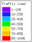
Classic Style
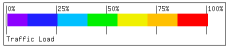
Horizontal Style
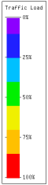
Vertical Style
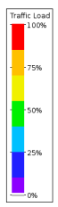
Inverted Style
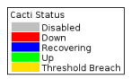
Tags StyleYou can hide the percentage signs in the key, by setting key_hidepercent_scalename to 1
If you have a 0->0 line in your SCALE, then you can hide that in the key, by setting key_hidezero_scalename to 1
Examples
Hiding percentage signs, and the 'absolute zero' SCALE entry in a
key.
SET key_hidezero_DEFAULT 1
SET key_hidepercent_DEFAULT 1
Change History
- 0.96
- Added tags and inverted styles.
- 0.92
- Added hidepercent and hidezero SET variables.
- 0.9
- Added support for multiple key styles (classic, horizontal, vertical).
SET
Specifies a value for a hint variable.
Hint Variables allow the user to pass settings to the internals of Weathermap that wouldn't normally need to be changed, or that aren't part of the core Weathermap application. Examples are: small rendering changes, parameters for datasources plugins and similar.
Hint Variables are either Global for the map, or assigned to a specific link or node.
There is more about Hint Variables in the Advanced Topics section.
Examples
Enabling 'bulging link mode' in the link-rendering code.
SET link_bulge 1
Enabling 'screenshot mode' to anonymise a map in 0.95 or
newer.
SET screenshot_mode 1
Disabling 'WMWARN50' messages from appearing
SET nowarn_WMWARN50 1
Change History
- 0.9
- Originally added SET.
INCLUDE
Reads another configuration file. Place INCLUDE in the global section, before the first NODE or LINK. Included files may supply global settings, scales, fonts and complete node/link templates; define a template before using it.
Use paths appropriate to the plugin's working directory and keep the files available to both editor and poller. Relative directive paths remain relative when saved. The editor tracks included configuration dependencies and refuses stale saves when those files change.
Shared colour scales can be shown as locked in Manage Colors. Edit the include
deliberately to change all maps that use it, or create an explicit override where the
form allows one. Saving the root map is not a general editor for the included file. Keep
backups before reorganising includes. Saving through the editor rewrites the root
configuration: hand-written # comments and original spacing are not
preserved. This does not refer to visible map notes or IN/OUT link comments.
Change History
- 0.96b
- Originally added INCLUDE.
HEIGHT in a link block
The active reader accepts HEIGHT inside a LINK block, but link drawing has no corresponding height setting. It does not set arrow thickness. Use WIDTH; reserve HEIGHT for the map canvas.
ORIGIN
Not supported by the active 2.0 configuration reader. ORIGIN appears in an unused keyword table but is not implemented by ReadConfig. Do not add it to maps. Use POSITION for node coordinates and LABELOFFSET or Display name position for icon labels.